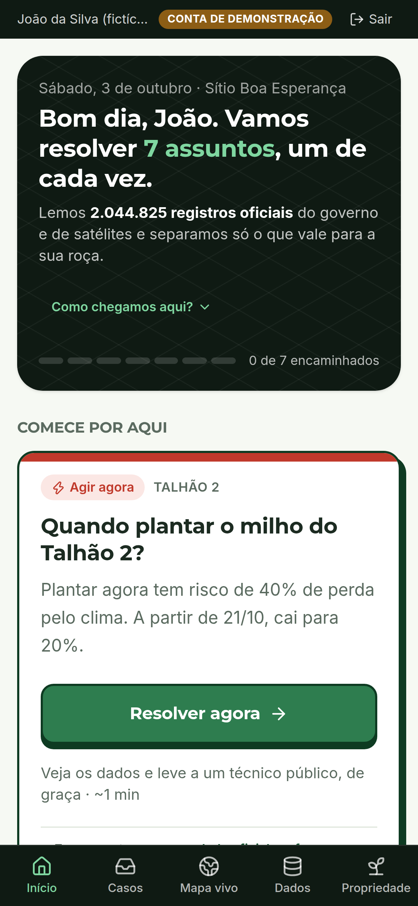
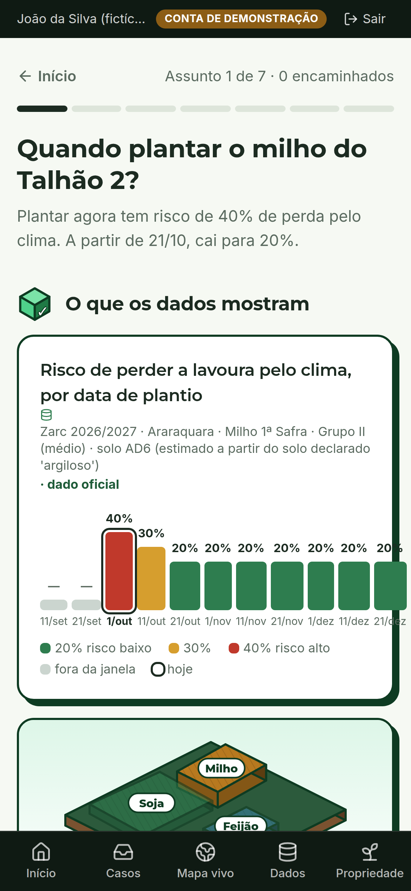
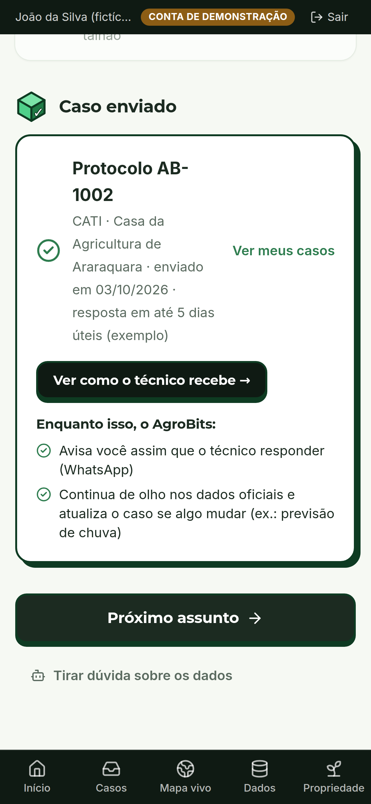
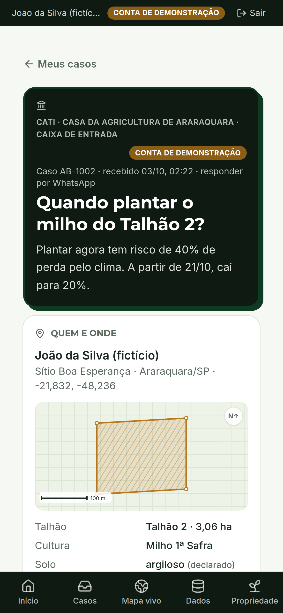
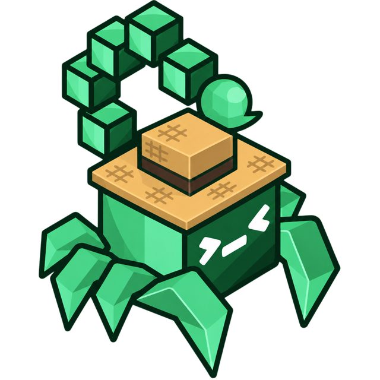

dos estabelecimentos rurais receberam orientação técnica.
Os outros 4 decidem sozinhos: quando plantar, o que aplicar, como enfrentar o clima.
Fonte: IBGE, Censo Agropecuário 2017 — resultados definitivos: 1.025.443 de 5.073.324 estabelecimentos declararam ter recebido orientação técnica.
E está piorando onde mais falta
A assistência do governo encolheu 21%.
2006
491.607
2017
388.077
estabelecimentos com orientação técnica vinda de órgãos de governo
13.690 extensionistas públicos para 3,9 milhões de estabelecimentos da agricultura familiar.
Fontes: IBGE, Censo Agropecuário 2017 (orientação por origem e por região); Asbraer, apresentação na CAPADR/Câmara dos Deputados, 2023 (extensionistas). Mapa: malha de regiões do IBGE.
O paradoxo
O dado que responde a essas perguntas já existe.
Zarc/MAPA: o risco de perder a lavoura pelo clima, para cada município, cultura, solo e data de plantio.
1.951.698
linhas, só nas safras 2025-26 e 2026-27.
Nenhum produtor vai abrir isso.
Fonte: MAPA, Zoneamento Agrícola de Risco Climático — Tábua de Risco (dados.agricultura.gov.br), arquivo original.
Como o dado vira decisão
Cruzamos 9 fontes abertas com o que o produtor conta.
O produtor conta
LOCALmunicípio · IBGETALHÃOdesenhado no mapaCULTURAo que plantaSOLOdeclarado
A IA não decide e não inventa número: só explica o resultado das regras. Fonte fora do ar → a tela avisa, nunca preenche com exemplo.
Para o João, em Araraquara/SP
2 milhões de registros viram 7 assuntos que ele entende.
2.044.825
registros oficiais na base (Zarc, Agrofit, seguro rural, aviação agrícola)
6.302
ligados ao município e às culturas dele
7
assuntos, cruzados com a previsão e a chuva real
Números do próprio AgroBits (/api/opendata/funnel), bases do MAPA conferidas no portal em 02/10/2026. João e o sítio são uma conta de demonstração; os dados abertos são reais. Barras fora de escala (log).
O AgroBits não substitui o agrônomo. Ele leva o agrônomo até quem nunca teve um.
Entende a roçaExplica o dadoEncaminha o caso
Demonstração · feito para o celular
Um assunto por vez. Do dado ao técnico em um minuto.
1 O que os dados mostram
2 Caminhos possíveis — ele escolhe
3 Leva ao técnico público, de graça
Ao vivo: localhost:5173 → "Entrar como João (demo)"




O valor para o especialista
O técnico chega sabendo.
Hoje: visita às cegas
Onde fica? Que talhão?
O que plantou? Qual o solo?
Está na janela do Zarc?
Choveu? Vai chover?
Com o AgroBits: caso pronto
Local, talhão, área, cultura, solo
Risco Zarc por data de plantio
Chuva prevista e × normal
Fontes com data · autorização LGPD
Triagem à distância, visita quando precisa: mais produtores por técnico — a medir no piloto.
Impacto · Objetivos de Desenvolvimento Sustentável (ONU)
Três objetivos, uma relação direta cada.
2
Fome Zero e Agricultura Sustentável
Metas 2.3 e 2.a: renda e produtividade do pequeno produtor; a 2.a cita os serviços de extensão rural.
13
Ação contra a mudança do clima
Meta 13.1: adaptação ao risco climático. O Zarc é risco climático por data de plantio.
10
Redução das desigualdades
A cobertura vai de 8% no Nordeste a 49% no Sul. O caso pronto encurta essa distância.
Como construímos em 24 horas
Organização
6 pessoasdecidem, validam, testam e apresentam
22 decisõesregistradas, cada uma aprovada pela equipe
70+ commitsno GitHub, entregas sempre na main
11 checkpointsdo problema (CP1) à entrega (CP10)
IA como par de programação (Claude), com a equipe decidindo produto, dados e prioridades.
Tecnologia a serviço de uma regra: nenhum número inventado.
Dados abertosCKAN do MAPA (hash) · APIs NASA, Open-Meteo, IBGE, ANA
›
Python + SQLitepipeline reprodutível · cache com data
›
FastAPI7 regras · IA com ferramentas e modo offline
›
Reactmobile first · mapa · TypeScript
40 testes da API + teste ponta a ponta em 390 px e 1280 px, nos dois cenários da demo.

AgroBits
Leva o agrônomo até quem nunca teve um.
Próximo passo: piloto com uma Casa da Agricultura (CATI).
1ª Hackathon de Dados Abertos · IFSP Araraquara · Thales Miguel Hajes · Milan Bahrami · Fernando · Maria · Victor Ricardo · Christian
→ avança · S notas e cronômetro · F tela cheia · T tema claro/escuro · ?print-pdf exporta